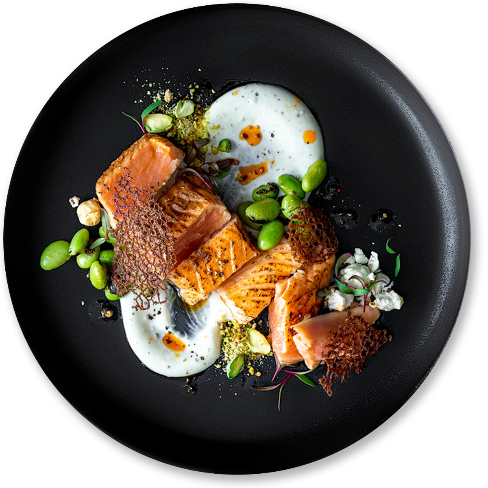
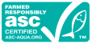

Tu socio estratégico en salmón
En Multi X combinamos nuestra experiencia como productores de salmón con innovación y flexibilidad para responder a las necesidades de cada cliente. Desde formatos tradicionales hasta desarrollos a medida, trabajamos juntos para crear soluciones que agregan valor.
Soluciones de salmón para cada necesidad
-
Salmón entero, filetes y porciones con o sin piel, con trazabilidad desde la ova hasta el producto final. Adaptamos cortes y presentaciones a los requerimientos de cada mercado.
-
Salmón entero, filetes y porciones con o sin piel, en distintos formatos según el producto. Soluciones que facilitan el manejo de inventario y el uso de la materia prima.
-
Salmón ahumado en frío y en caliente con humo natural de roble chileno, en distintos formatos listos para servir. Desarrollamos productos que se adaptan a diferentes usos y ocasiones de consumo.
Desde el sur de Chile, conectados con el mundo
Llegamos a más de 30 países con soluciones de salmón que responden a las necesidades de cada mercado. Nuestra experiencia y presencia comercial nos permiten construir relaciones de largo plazo.
-
30+
países de destino en América, Europa y Asia [contenido por definir]
-
+400
clientes en retail, food service e industria [contenido por definir]
-
90 mil
toneladas exportadas cada año [contenido por definir]
Oficinas comerciales
- Puerto Montt, Chile
- Miami, USA
- Shanghái, China
- Puerto Montt, Chile
- Miami, Estados Unidos
- Shanghái, China
- Norteamérica
- Centroamérica
- Sudamérica
- Europa
- Asia
- Oceanía
- Oficina comercial
- Mercados de destino


Productos frescos, congelados y ahumados
El catálogo Multi X reúne nuestro portafolio de salmón fresco, congelado y ahumado, con información sobre cortes, formatos, presentaciones y especificaciones técnicas para cada línea de productos.
Descargar catálogo (PDF) [peso por definir]
Certificaciones
Nuestros procesos están certificados por los principales estándares internacionales de acuicultura e inocuidad alimentaria. [contenido por definir]
-

Certifica prácticas responsables de acuicultura en materia ambiental, social, de bienestar animal e inocuidad alimentaria. Respalda el origen responsable del producto.
-

Certifica el cultivo responsable mediante requisitos ambientales y sociales. Respalda el abastecimiento desde centros de cultivo evaluados bajo un estándar internacional.
-

Verifica la identificación, segregación y trazabilidad del producto certificado durante su procesamiento y comercialización, preservando su integridad a lo largo de la cadena de suministro.
-
Certifican los sistemas de gestión de calidad, medio ambiente y seguridad y salud en el trabajo. Respaldan procesos estandarizados y orientados a la mejora continua.
-

Evalúa la calidad e inocuidad alimentaria en las plantas de proceso. Respalda el cumplimiento de requisitos de producción para entregar alimentos seguros al cliente.
-

Certifica requisitos de inocuidad, calidad y control de procesos en las plantas. Aporta respaldo al cliente sobre la gestión de riesgos en la elaboración de alimentos.
-

Certifica el cumplimiento de los requisitos alimentarios de la religión judía. Respalda la conformidad de ingredientes y procesos para los productos incluidos en su alcance.
Hablemos de tu próximo pedido
Nuestro equipo comercial atiende a clientes en cada mercado. [contenido por definir]